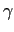
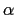
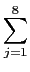
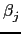
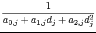
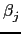
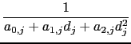
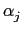
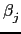
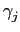

suivant: La géométrie plane (2D)
monter: Graphes dans l'espace
précédent: Rotation animée du point
Table des matières
Index
Les lumières des graphes 3-d
Dans la configuration d'un graphe 3-d (bouton cfg en bas à droite
de la figure), on peut cocher l'option Lights. Dans ce cas,
au lieu de visualiser des objets émettant une couleur intrinsèque,
on va éclairer les objets avec un ou plusieurs spots lumineux. Ces
spots sont numérotés de 1 à 8 et peuvent être configurés avec les
boutons l1 à l8. Nous allons décrire brièvement dans cette section ce
type de visualisation, le lecteur souhaitant appronfondir pourra
se référer à la documentation d'OpenGL.
Il y a 2 types de spot: positionnel si w = 1 et directionnel si w = 0
(pour une lumière à l'infini, par exemple du Soleil). Chaque objet
a des propriétés vis-à-vis de trois type de lumière: ambiante (sans
direction privilégiée), diffuse (émise dans la direction spot-objet,
diffusée dans toutes les directions,
éventuellement atténuée selon la distance spot-objet et l'angle entre
la direction du spot et la direction spot-objet), spéculaire (réémise
préférentiellement dans la direction objet-spot). De plus un objet
peut lui-même émettre de la lumière (propriétés d'émission).
- Caractéristique géométriques :
les paramètres x, y, z permettent
de définir la position du spot si w vaut 1 ou sa direction si w
vaut 0.
Les paramètre
x  , y , z définissent
la direction du spot si w vaut 1.
, y , z définissent
la direction du spot si w vaut 1.
- Caractéristiques de la lumière :
chaque spot fournit
- de la lumière
ambiante (indépendante de l'angle entre la direction spot-objet et
objet-position de l'oeil, renvoyée par le matériau selon ses
propriétés relativement à la lumière ambiante),
- de la lumière diffuse, renvoyée dans toutes les directions
sans préférence, en fonction des
propriétés de lumière diffuse du matériau, avec un
coefficient d'atténuation dépendant du cosinus de l'angle
 entre la direction spot-objet (si w = 1) ou
direction du spot (si w = 0) et la normale à l'objet,
entre la direction spot-objet (si w = 1) ou
direction du spot (si w = 0) et la normale à l'objet,
- de la lumière spéculaire, permettant
d'émuler une réflexion sur un miroir ou un aspect laqué,
cette lumière sera renvoyée
par l'objet en fonction de ses propriétés spéculaires,
préférentiellement dans la direction d'émission, plus précisément
en fonction du cosinus de ,
l'angle entre le symétrique de la direction d'émission avec la normale
à l'objet avec la direction
objet-oeil, le cosinus est élevé à la puissance définie par le paramètre
``gl_shininess'' de l'objet.
On définit pour chaque type de lumière ses 4 composantes (r: red=rouge, g:
green=vert, b: blue=bleu, a: alpha=transparence) par un réel compris
entre 0 et 1 (maximum). Par exemple, pour voir une scène en lumière
bleue, on mettrait 0 sur les canaux r et g et 1 sur le canal b.
On utilise en général les mêmes valeurs pour la lumière diffuse et
spéculaire, 1,1,1,1 pour les propriétés spéculaires d'un
objet de type miroir, et des valeurs correspondant à la couleur
pour les propriétés d'émission et de diffusion d'un objet.
- Caractéristique d'émission du spot :
exp est un entier, c'est un coefficient permettant de régler
l'atténuation de la lumière. Plus précisément il s'agit de
l'exposant du cosinus de l'angle  entre la direction du spot
et la direction spot-objet éclairé,
il n'y a pas d'atténuation si w = 0), on utilise 0 ou 1 ou plus selon
que l'on souhaite un spot moins ou plus focalisé,
cutoff permet de régler l'angle  du cône (d'axe
la direction du spot) où le spot
envoie de la lumière, il vaut 180 si le spot est isotrope
(émet identiquement dans toutes les directions)
ou une valeur entre 0 et 90 en degrés sinon, dans ce cas aucune
lumière n'est reçue si l'angle est supérieur à .
du cône (d'axe
la direction du spot) où le spot
envoie de la lumière, il vaut 180 si le spot est isotrope
(émet identiquement dans toutes les directions)
ou une valeur entre 0 et 90 en degrés sinon, dans ce cas aucune
lumière n'est reçue si l'angle est supérieur à .
- les coefficients
att0 à att2 permettent d'atténuer
la lumière d'un spot positionnel
en fonction de la distance d spot-objet, en la multipliant par
Finalement, sur chaque canal de couleur, la luminosité est obtenue par
la formule :
| l |
= |
oe + oala, j + osls, jcos( )S + )S + |
|
| |
|
+ odld, jcos( )ejcos() )ejcos() |
|
où :
-
oe, oa, od, os désignent la valeur pour le canal de couleur
de l'objet en émission, ambiante, diffuse, spéculaire et S désigne
l'exposant ``shininess''de l'objet
-
la, j, ld, j, ls, j désignent la valeur pour le canal de couleur
du spot j en ambiant, diffuse, spéculaire
-
a0, j, a1, j, a2, j désignent les coefficients
d'atténuation du spot j, remplacés par 1,0,0 si w = 0 (pas
d'atténuation)
- dj est la distance du spot j à l'objet
-  est l'angle entre la direction du spot j et du
segment reliant le spot j et la facette de l'objet, sauf si est
supérieur à l'angle de cutoff du spot j (
=
 /2),
ou si w = 0 (
= 0, pas d'atténuation directionnelle).
/2),
ou si w = 0 (
= 0, pas d'atténuation directionnelle).
-  est l'angle entre le segment spot j-objet et
la normale à la facette de l'objet (si w = 0 on remplace spot j-objet par
direction du spot)
-  est l'angle entre le symétrique de la direction
du spot par rapport à la normale à la facette de l'objet
et le segment objet-oeil
Si on ne coche pas l'option Blend (pas de transparence), les objets
situés devant d'autres objets les masquent complètement.
Si on coche l'option Blend, la valeur du canal a (alpha=transparence)
est utilisée pour composer la luminance des objets précédents avec
celle de l'objet représenté ensuite.
Enfin, l'option Gouraud permet de lisser la représentation des
surfaces par des facettes (ce sont des facettes quadrangulaires
sauf pour les surfaces implicites qui sont triangulées).
suivant: La géométrie plane (2D)
monter: Graphes dans l'espace
précédent: Rotation animée du point
Table des matières
Index
Documentation de giac écrite par Renée De Graeve